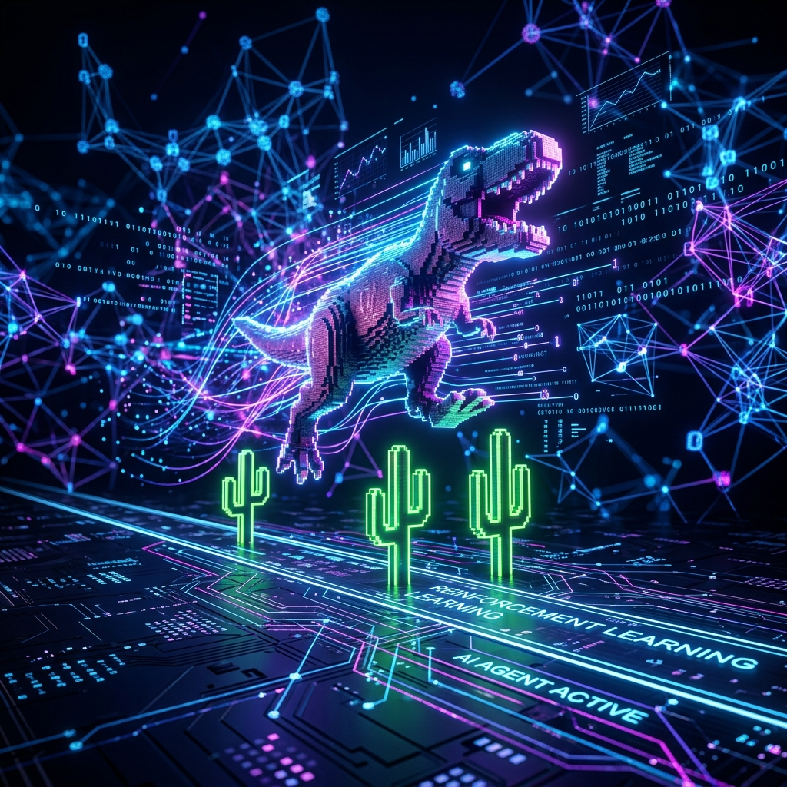
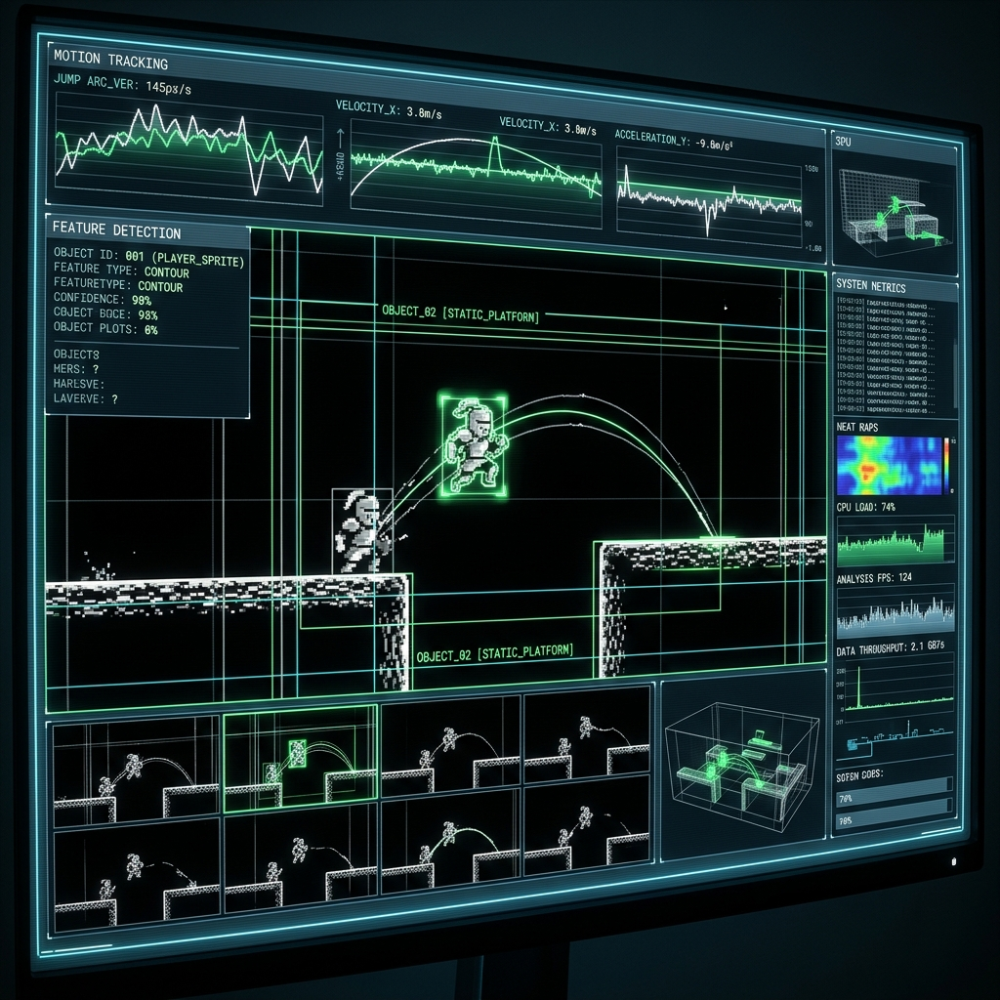
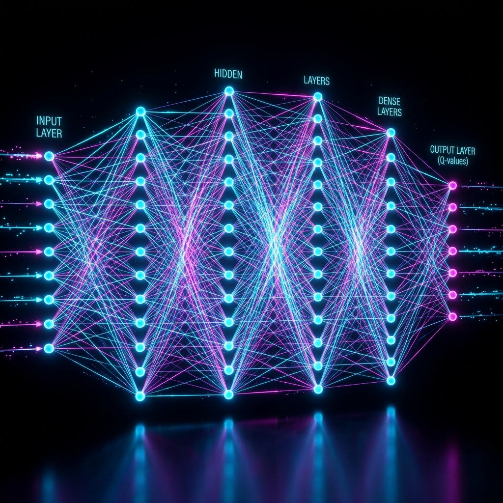

자율적으로 진화하는
크롬 공룡 에이전트
심층 강화학습(Deep Reinforcement Learning) 기반. DQN 및 D3QN 아키텍처를 이용하여 오프라인 공룡 게임(chrome://dino)을 정복하는 AI의 진화를 확인하세요.

핵심 특징 및 기술
안정적인 학습과 최고의 성능을 달성하기 위해 구현된 고급 분석/처리 모듈들
실시간 화면 분석
OpenCV를 활용해 게임 화면의 픽셀 데이터를 실시간 캡처합니다. Canny Edge 및 차분 필터 전처리로 환경 변수에 강건합니다.
D3QN 아키텍처
상태 가치와 행동 이득을 분리하는 Dueling Double DQN을 적용해 보다 정교한 판단 능력을 갖추었습니다.
하드웨어 가속
CUDA 및 Apple MPS 프로세싱 자원을 완전히 활용하도록 자동 감지 및 텐서 연산 최적화를 수행합니다.
경험 기반 재현 (PER)
하이브리드 듀얼 버퍼 메모리로 오차가 높은 중요한 기억들을 선별해 재학습하는 효율적 샘플링 로직을 탑재했습니다.
기술 파이프라인 Deep Dive

비전 코어 모델 최적화
게임 중 주·야간 테마 변경으로 인한 픽셀 역전 노이즈를 회피하기 위해 화면의 윤곽선만 도출하는 검출(Edge Detection) 기술을 사용합니다. AI가 순수 객체의 위치 정보에만 집중하게 만들어 불필요한 환경 변동성을 차단합니다.

Deep Q-Network 설계
연속된 합성곱(CNN)의 강력한 특징 추출 구조를 기반으로 구성되었습니다. 엡실론-그리디 감소 추세에 맞춰 타겟 네트워크 소프트 업데이트와 클리핑(Loss & Gradient)을 활용해 최상의 수렴 상태에 도달합니다.